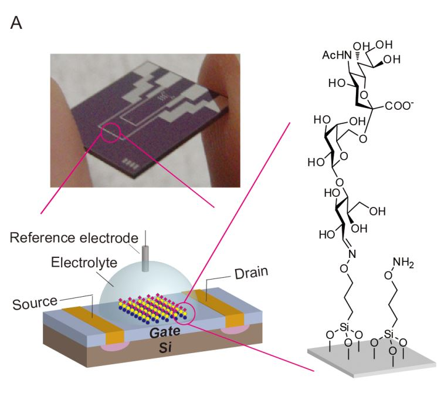

SensUs 2021
Sensing Barcelona
Sensing Barcelona is a team formed by Biomedical Engineering graduates (Maria Mor, Helena Riesco, Helena Rodríguez and myself) and a PhD student (Oriol Ocaro) from the UB and the UPC. In the framework of SensUs 2021 competition, we have spent the summer months developing a prototype of biosensor to detect the H1N1 protein (influenza) in human's saliva.
Our team main idea for the molecular recognition is based on the bonding of the H1 protein to the ligand glycans attached to the sensor surface. The glycans used are 3' and 6' Sialyllactose and are immobilized using a chemical bonding to chitosan. The chitosan avoids the glycans to be solved when the sample to analysed is introduced. In order to improve the effective surface, the sensor has been functionalized with nanocellulose. This nano-structure provides more surface to attach the glycans and, consequently, more H1N1 proteins to be linked. The image on the left is from Hideshima, Sho et al. study, one of our references. In this study FET sensors functionalized with two sialyl oligosaccharide ligands are used. The electrodes of the sensor act like a capacitor and enable us to perform an electrochemical impedance spectroscopy. When the proteins are linked to the sensor’s glycans, the impedance value is expected to change, proportionally to the concentration level of the viral protein. With our experiments, we have tried to obtain a calibration curve that could correlate concentration and impedance.
Below, the animation of our design created with 3dsMax and Maya softwares. The box will contain all the necessary to perform the impedance spectroscopy: a PalmSens potentiostat, the holder and cables. The box has been printed using a 3D printer. Due to lack of resources, with regardless of the team's willingness, all that proceeds has only been conceived conceptually. A cable emerging from the box will connect to any computer where the results will be displayed. The measured curves will require a post-processing to discriminate between positive and negative cases. The call algorithm will be developed in R Studio, as it is a known programming language by the team members and enables rapid prototyping. R Shiny could be used to provide a graphical user interface to present the results to the final user.
Jordi Colomer and Jamina Casals, have given us the support necessary to develop this project. Their guidance has been fundamental as they have provided us the material, laboratories and facilities to carry out the work, a part from an experienced vision of project management. Finally, Enric Perarnau and Jacobo Galofre have been a great technical support.